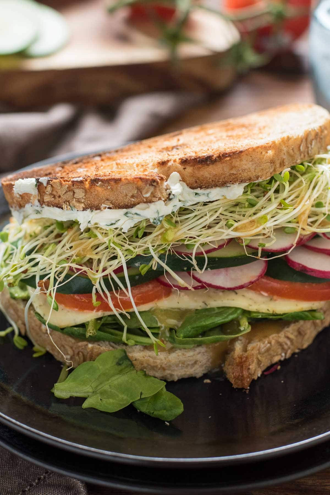

ઘટકો:-
1. વેજ સેન્ડવિચ માટે-
- 12 સફેદ બ્રેડના ટુકડા
- 1 મોટું બટેટા બાફેલા, છાલેલા અને પાતળા કાપેલા
- 2 થી મેટોના પાતળા ગોળ કાપેલા
- 1 મધ્યમ ડુંગળી ગોળ કાપેલી
- 1/2 કેપ્સીકમ વૈકલ્પિક ગોળમાં કાપેલા
- ચાટ મસાલા પાવડર
- મરી પાવડર
- મીઠું
- મીઠું ચડાવેલું માખણ
2. લીલી ચટણી માટે
- 1 કપ ચુસ્ત રીતે પેક કરેલી કોથમીર ધોઈ, અને લગભગ સમારેલી
- 1 કપ ચુસ્ત રીતે પેક કરેલા ફુદીનાના પાન ધોઈને લગભગ સમારેલા
- 2 લીલા મરચા
- 1/2 ચમચી શેકેલું જીરું પાવડર
- 1/2 ચમચી ચાટ મસાલા પાવડર
- 1/2 ચમચી ખાંડ
- 1 ચમચી લીંબુનો રસ
- મીઠું
Devloped by:Khushi